Power Admin Main Menu
- VMware vCenter Orchestrator interface/workflow
https://github.com/kairoaraujo/PowerAdm/wiki/vCO-for-PowerAdm
Select one of the options:
- Creates a new LPAR configuration, this function generates a change/ticket to create or modify a LPAR configuration. The ticket will be processed later (option 2).
- Execute the LPAR creation (change/ticket) from option 1
- Deploy images on LPARs created in option 2
- Clear configs used to Deploy OS with NIM Server
- Quits from Power Adm
LPAR Configuration (option 1)
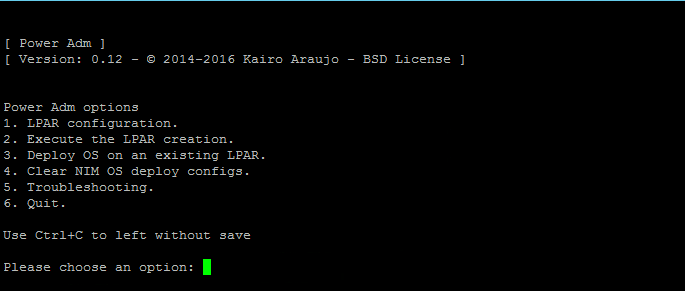
Makes LPAR configuration easier. Even people without expertise in HMC ou Power Systems is able to use it.
Default calculations are configurable on config.py and pre configuration to Deploy OS using NIM Server.

If you have more than one frame on your HMC select the host.
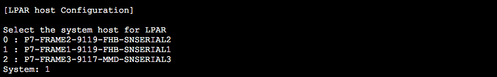
If the LPAR needs a vSCSI, say yes (y) -- two adapters, one by VIO.
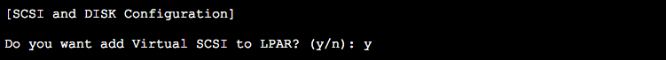
[not tested yet] you can add a disk from a Shared Storage Pool, select the Storage Pool you want to use.
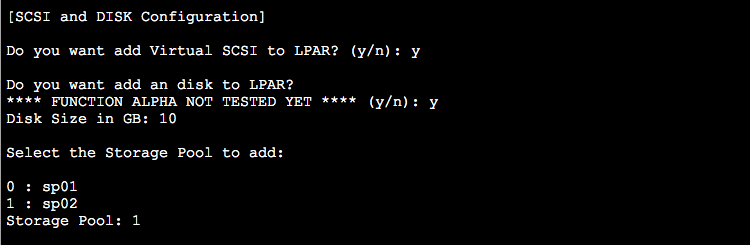
Add up to three Ethernets, select Virtual Switch and enter the VLAN ID.
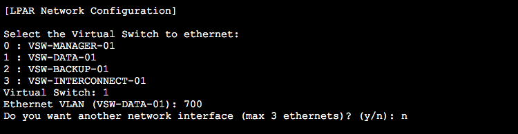
Add Virtual Fiber Channel (NPIV/HBA), select the physical path to vfcmap -- two adapters by VIO
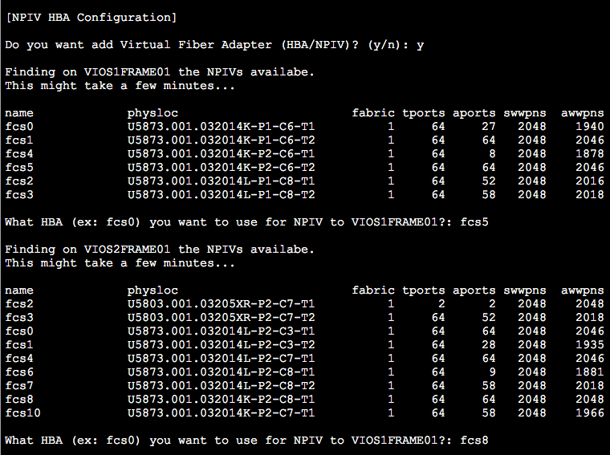
Validate your settings for the LPAR.
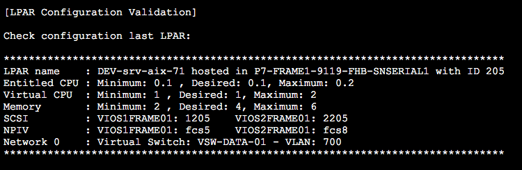
If it is okay, you can run the ticket now or save to run later.
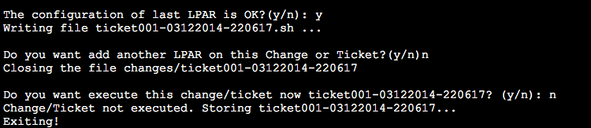
Creation LPAR (option 2) from the previous configuration
Select your tickets/changes and execute creation
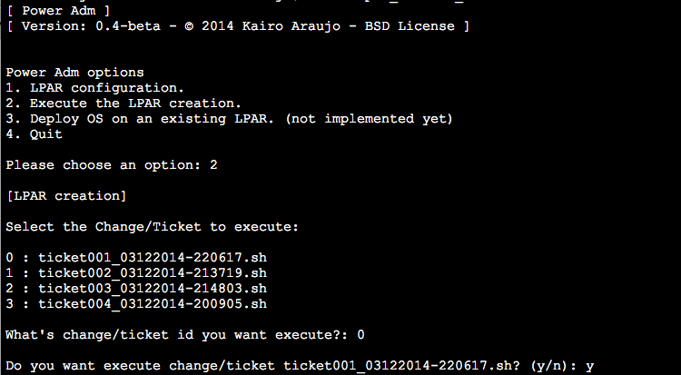
The creation is automatic
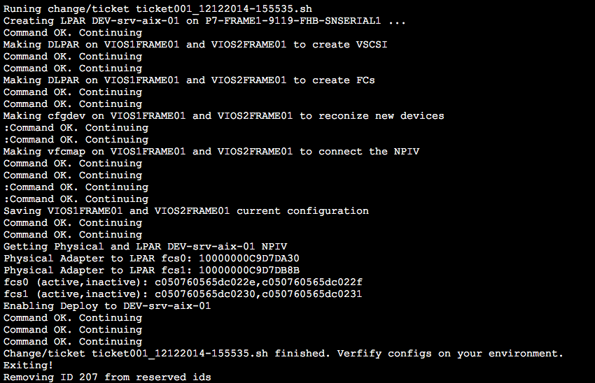
Deploy Operation System using NIM (Option 3)
Select the Server, Version and NIM Server to use for deploy.
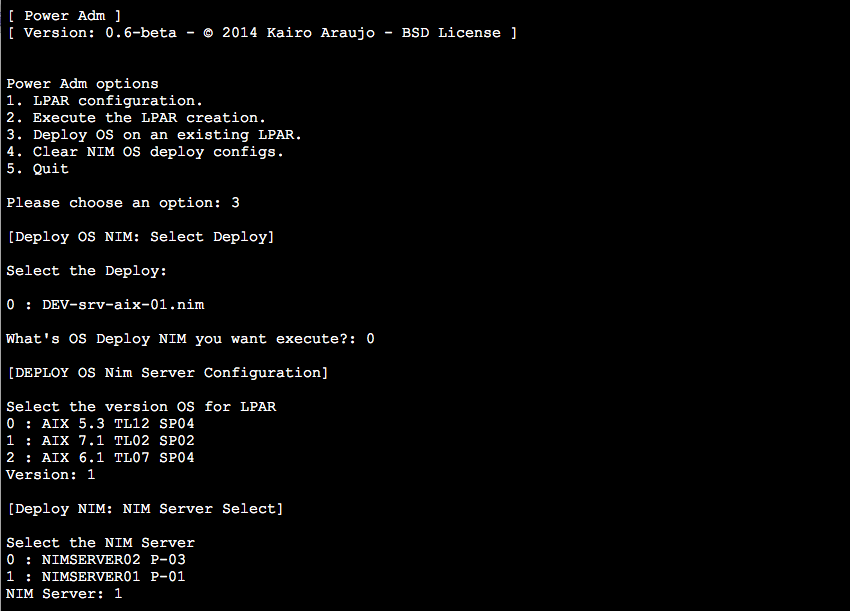
Check the configuration and start deploying the Operation System.
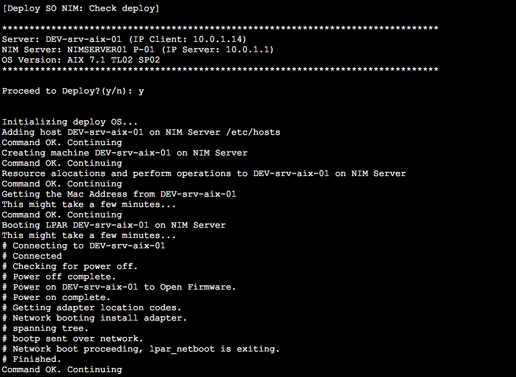
Access the HMC and open the Virtual Menu. You can access using the same session.
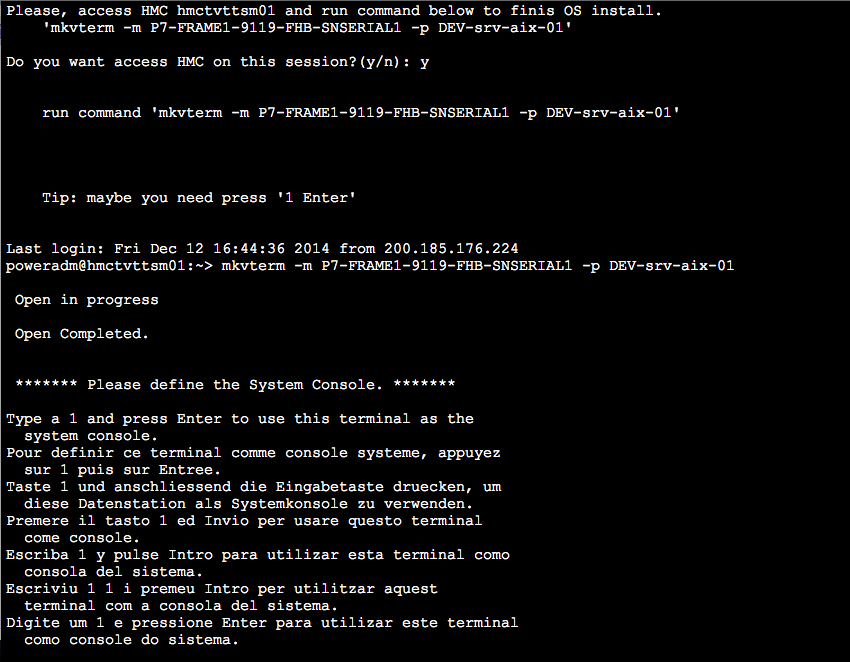
Cleanup Deploy Operation System configuration
Select the executed deploys to remove and confirm. This will Remove all settings on the NIM Server.
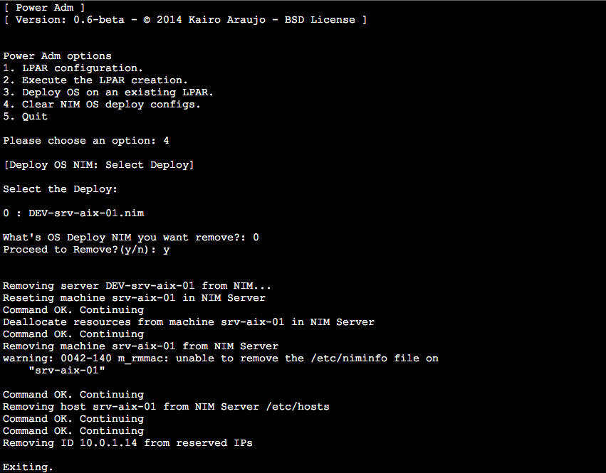